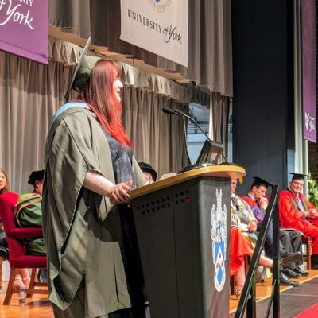

Awards & Achievements
Over the past four years I have been grateful to be part of many incredible opportunities and lucky enough to receive awards and recognitions for my work and advocacy. Scroll down to find out more.
Academic Achievements
- University Commendation award for achieving the highest grades in my Physics and Electronics cohort at the University of York in 2021
- Qualification in the Foundation of Physics and Computer Science University of York: 84% overall (Equivalent to a 1st with distinction)
- ‘The Oliver Award’ for sixth form progress and achieving the highest grades in my sixth form cohort. Awarded a certificate and engraved trophy
- BSc Hons in Computer Science 2:1 (Graduated July 2024)
- SAINTS CDT doctoral scholarship recipient (2024-2028)
- Mike Pinson Undergraduate Memorial scholarship (2024)
Extracurricular Achievements
- Qualification in ICT NQF/LVL2: PowerPoint (98%), Word (98%), Excel (100%), and ICT competency (97%)
- Completed Course ‘Leaders of Tomorrow’ for business enterprise delivered by AI in Business during 2020
- Qualification in Level 2 Medical advisory for Holland and Barrett (2022)
- Winner (2021), Finalist (2022) & Finalist (2023) of ‘The Scott Award’ for Art and Design
Industry Awards
- IET Future Scholar Award sponsored by Spirax Sarco Engineering
- Secure Coding Award with SCADEMY in C/C++
- SC-900 Microsoft Certification
Image Gallery
Oliver Award Trophy
 Scott Award for Art and Design
Scott Award for Art and Design

Orator Award Speech at my Graduation 2024